#72 Carisbrook · Dunedin (1 Tests)
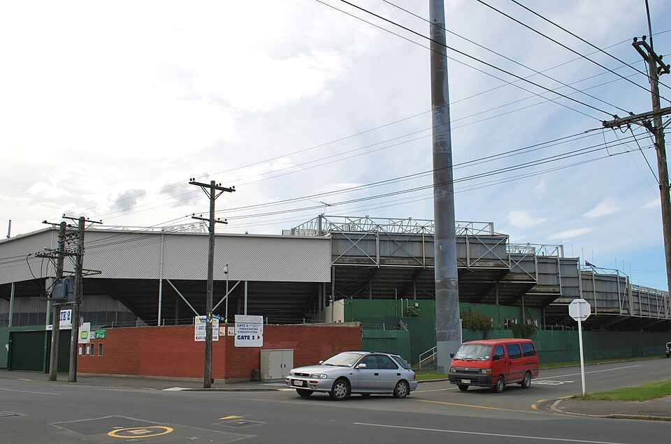
0: CC BY-SA 3.0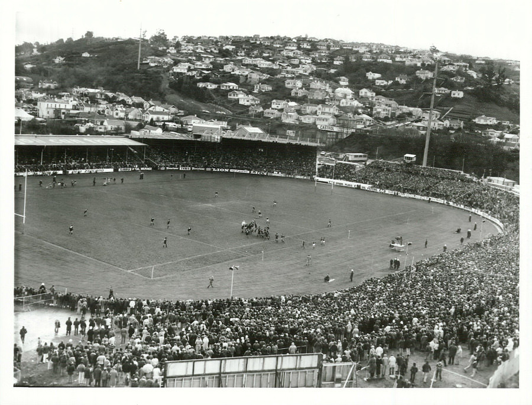
1: CC BY 2.0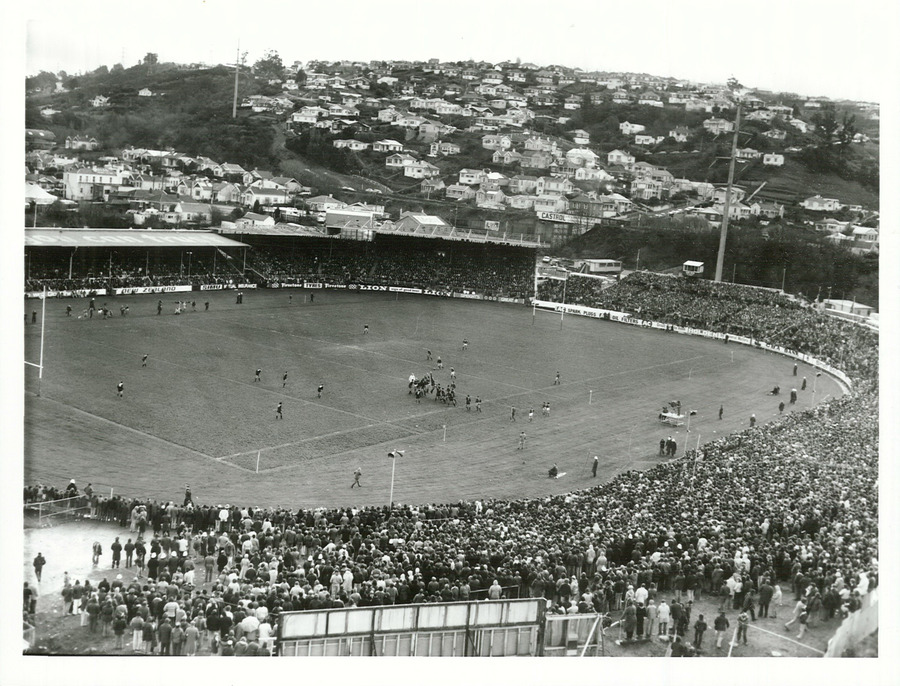
2: CC BY 2.0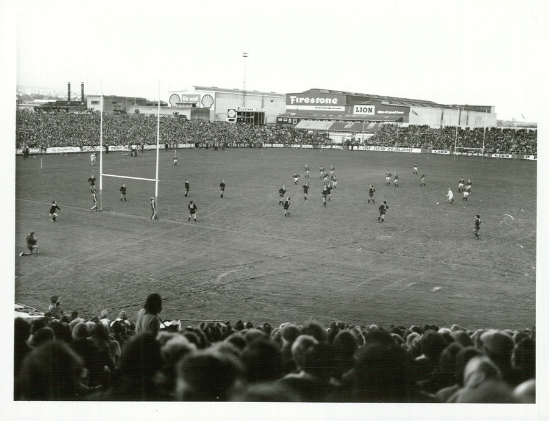
3: CC BY 2.0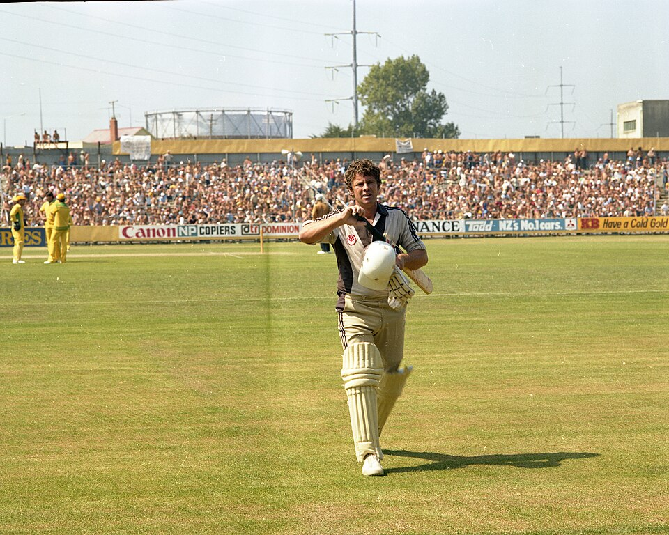
4: CC BY 2.0#73 Niaz Stadium · Hyderabad (1 Tests)
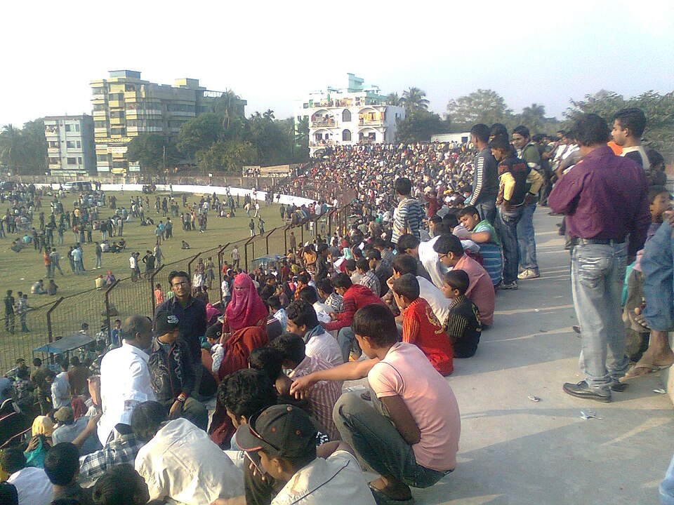
0: CC BY-SA 4.0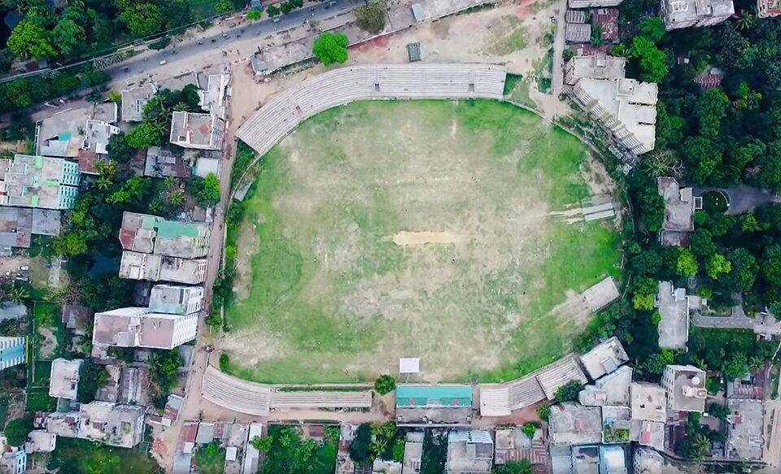
1: CC0#74 Burlton Park · Jalandhar (1 Tests)
no candidates
#75 Sawai Mansingh Stadium · Jaipur (1 Tests)
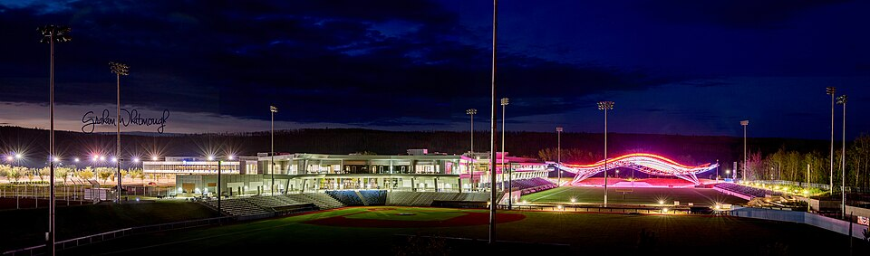
0: CC BY-SA 4.0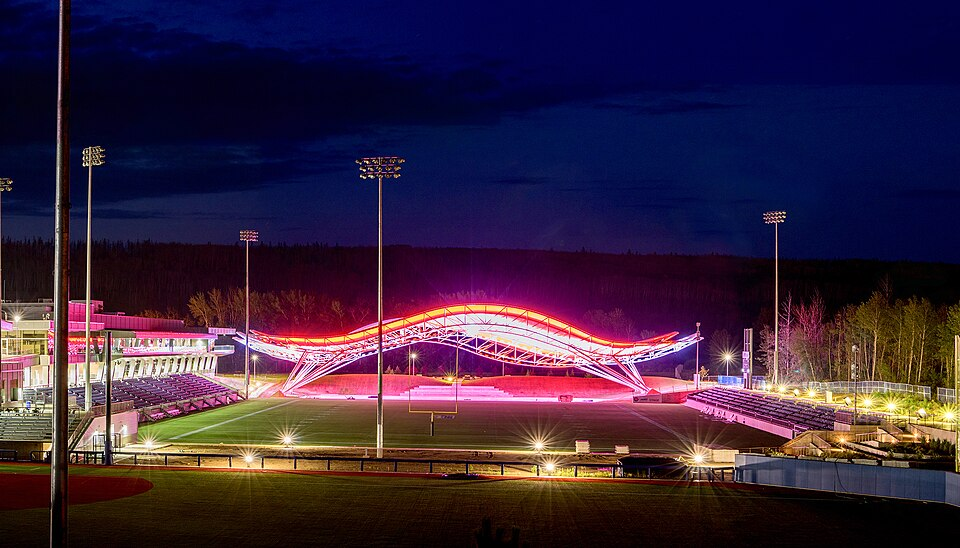
1: CC BY-SA 4.0#76 Jinnah Stadium · Sialkot (1 Tests)
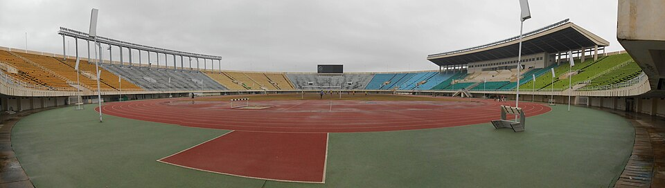
0: CC BY-SA 3.0#77 Sector 16 Stadium · Chandigarh (1 Tests)
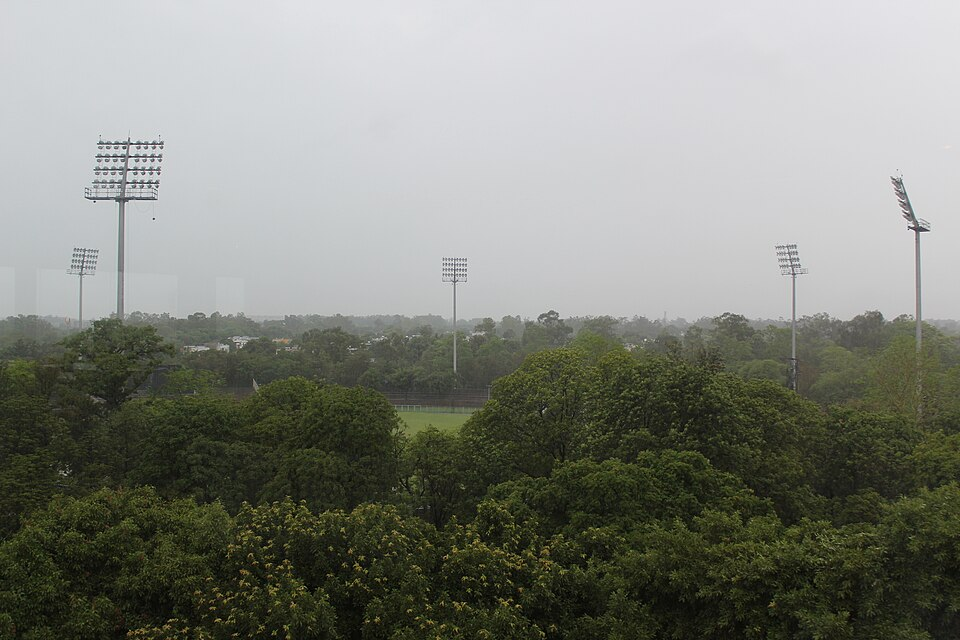
0: CC BY-SA 4.0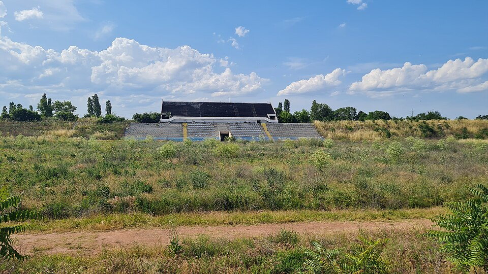
1: CC0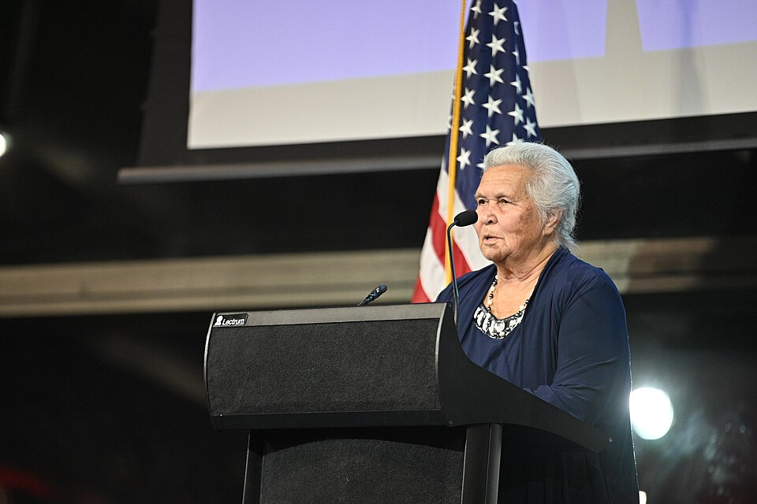
2: Public domain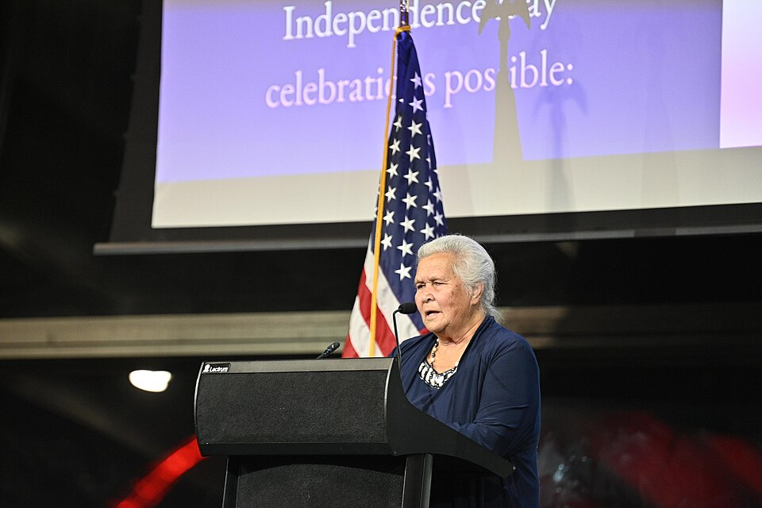
3: Public domain4: Public domain